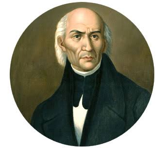
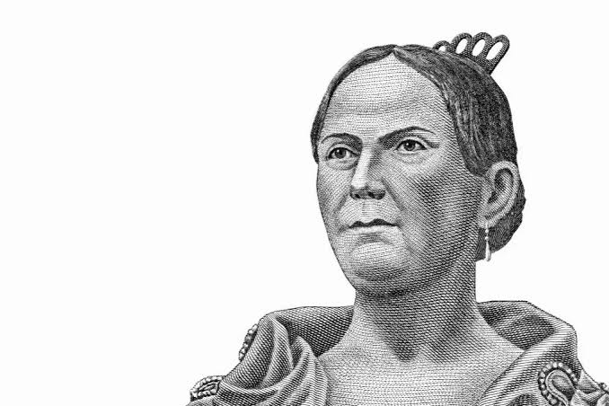
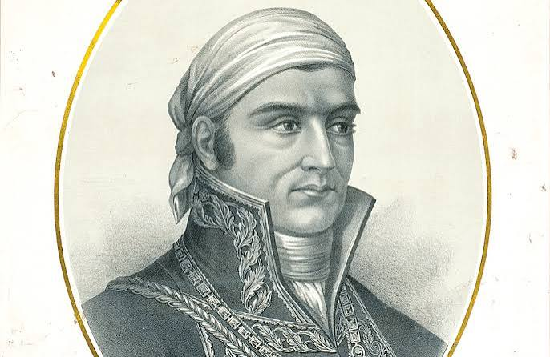
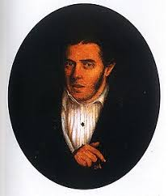

sitio web informativo sobre la historia, personajes y datos curiosos de mexico.
conocido como el "padre de la patria". fue el cura que convoco al pueblo a levantarse en armas la madrugada del 16 de septiembre.

conocida como "la corregidora". pieza clave que aviso a los insurgentes que la conspiracion habia sido descubierta.

lider militar de la causa insurgente y autor del documento historico "sentimientos de la nacion".

general insurgente que mantuvo la lucha en el sur y logro la consumacion de la independencia junto a agustin de iturbide.

respuesta: miguel hidalgo dio el grito en la madrugada del 16 de septiembre de 1810. sin embargo, la fiesta popular comenzo a celebrarse formalmente la noche del 15 desde mediados del siglo xix.
respuesta: se cuenta que juan escutia se envolvio en la bandera nacional y se arrojo desde el castillo de chapultepec. sin embargo, historiadores senalan que no hay registros oficiales exactos de este hecho.
respuesta: este platillo fue creado por monjas en puebla para celebrar la independencia. sus ingredientes representan los colores patrios: verde (perejil), blanco (nogada) y rojo (granada).
↑ volver al inicio de la pagina
sitio web educativo sobre el mes patrio - creado en html basico.